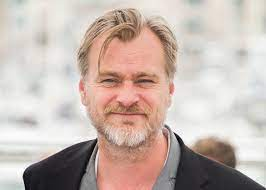

Christopher Nolan
>Director > Writer > Producer

-
Born : Christopher Edward Nolan
30 Jliy 1970 (age 52)
London, England
- Citizenship :
United KingdomUnited States
Alma mater University College London
- Occupations :
Film director , film producer , screenwriter
- Years : active 1998–present
Early Life
Christopher Edward Nolan was born on 30 July 1970, in Westminster, London. His father, Brendan, was a
British advertising executive who worked as a creative director. His mother, Christina, was an American
flight attendant from Evanston, Illinois; she would later work as a teacher of English. He has an elder
brother, Matthew, and a younger brother, Jonathan, also a filmmaker. The three were raised Catholic in
London and would spend their summers in Evanston. Nolan has both UK and US citizenship.[2][3]
Growing up, Nolan was particularly influenced by the work of Ridley Scott and the science fiction films
2001: A Space Odyssey (1968) and Star Wars (1977).[4][5] He would repeatedly watch the latter film and
extensively research its making.[6] Nolan began making films at the age of seven, borrowing his father's
Super 8 camera and shooting short films with his action figures.[7] These films included a stop motion
animation homage to Star Wars called Space Wars. He cast his brother Jonathan and built sets from "clay,
flour, egg boxes and toilet rolls".[4] His uncle, who had worked at NASA building guidance systems for
the Apollo rockets, sent him some launch footage: "I re-filmed them off the screen and cut them in,
thinking no-one would notice", Nolan later remarked.[8] From the age of 11, he aspired to be a
professional filmmaker.[9] Between 1981 and 1983, Nolan enrolled at Barrow Hills, a Catholic prep school
in Weybridge, Surrey.[10] In his teenage years, Nolan started making films with Adrien and Roko Belic.
Nolan and Roko co–directed the surreal 8 mm Tarantella (1989), which was shown on Image Union, an
independent film and video showcase on the Public Broadcasting Service.[a][12][13]
Nolan was educated at Haileybury and Imperial Service College, an independent school in Hertford Heath,
Hertfordshire, and later studied English literature at University College London (UCL). Opting out of a
traditional film education, he pursued "a degree in something unrelated", which his father suggested
"gives a different take on things".[14] He chose UCL specifically for its filmmaking facilities, which
comprised a Steenbeck editing suite and 16 mm film cameras.[15] Nolan was president of the Union's Film
Society,[15] and with Emma Thomas (his girlfriend and future wife) he screened feature films of 35 mm
during the school year and used the money earned to produce 16 mm films over the summers.[16]
Career
After earning his bachelor's degree in English literature in 1993, Nolan worked as a script reader,
camera operator and director of corporate videos and industrial films.[15][17][18] He directed, wrote
and edited the short film Larceny (1996),[19] which was filmed over a weekend in black and white with
limited equipment and a small cast and crew.[12][20] Funded by Nolan and shot with the UCL Union Film
society's equipment, it appeared at the Cambridge Film Festival in 1996 and is considered one of UCL's
best shorts.[21] For unknown reasons, the film has since been removed from public view.[19] Nolan filmed
a third short, Doodlebug (1997), about a man seemingly chasing an insect with his shoe, only to discover
that it is a miniature of himself.[14][22] Nolan and Thomas first attempted to make a feature in the
mid-1990s with Larry Mahoney, which they scrapped.[23] During this period in his career, Nolan had
little to no success getting his projects off the ground, facing several rejections; he added,
"[T]here's a very limited pool of finance in the UK. To be honest, it's a very clubby kind of place ...
Never had any support whatsoever from the British film industry."[24]
Impressed by his work on Memento, filmmaker Steven Soderbergh recommended Nolan to Warner Bros. to
direct the psychological thriller Insomnia (2002), although the studio initially wanted a more seasoned
director.[45] A remake of the 1997 Norwegian thriller of the same name, the film is viewed as "the
outlier of Nolan's filmography" due to its perceived lack of unconventionality he is known for.[46]
Starring Al Pacino, Robin Williams and Hilary Swank,[47] Insomnia follows two Los Angeles detectives
sent to a northern Alaskan town to investigate the murder of a local teenager. It received positive
reviews from critics and earned $113 million against a budget of $46 million.[48][49] Film critic Roger
Ebert praised the film for introducing new perspectives and ideas on the issues of morality and guilt,
adding, "Unlike most remakes, the Nolan Insomnia is not a pale retread, but a re-examination of the
material, like a new production of a good play."[50] Richard Schickel of Time deemed Insomnia a "worthy
successor" to Memento and "a triumph of atmosphere over a none-too-mysterious mystery".[51] Following,
Memento and Insomnia established Nolan's image as an "auteur".[52] After the lattermost, he wrote a
screenplay for a Howard Hughes biopic. Nolan reluctantly tabled his script after learning that Martin
Scorsese was already making one such film: The Aviator (2004).[53] He turned down an offer to direct the
historical epic Troy (2004).[54]
Personal Life
Nolan is married to Emma Thomas, whom he met at University College London when he was 19.[9][16] She has
worked as a producer on all of his films since 1997.[43][162] The couple have four children and reside
in Los Angeles.[163]
Rarely granting promotional interviews about his films, Nolan prefers to maintain a certain level of
mystery about his work.[164] Refusing to discuss his personal life,[165] he feels that too much
biographical information about a filmmaker detracts from the experience of his audiences. "I actually
don't want people to have me in mind at all when they're watching the films." Author Stuart Joy felt
that Nolan's unwillingness to talk about his personal life shows a desire for control, one of the
recurring themes in his work.[164]
Nolan was physically assaulted by fellow filmmaker David O. Russell in 2003 at a party in Hollywood. The
latter reportedly put Nolan in a headlock and wrapped his arm around Nolan's neck.[166][167]
Film Making Style
Nolan's films are majorly centred in metaphysical themes, exploring the concepts of time, memory and
personal identity.[168][169] His work is characterised by mathematically inspired ideas and images,
unconventional narrative structures, materialistic perspectives, and evocative use of music and
sound.[d] Filmmaker Guillermo del Toro called Nolan "an emotional mathematician".[174] BBC's arts editor
Will Gompertz described him as "an art house auteur making intellectually ambitious blockbuster movies
that can leave your pulse racing and your head spinning".[175] Joseph Bevan wrote, "His films allow
arthouse regulars to enjoy superhero flicks and multiplex crowds to engage with labyrinthine plot
conceits."[97] Nolan views himself as "an indie filmmaker working inside the studio system".[176]
Awards
| Sr |
Award Name |
Year |
Movie |
| 1 |
Empire Award for Best Film
|
2009 |
The Dark Knight
|
| 2 |
Edgar Award for Best Motion Picture Screenplay
|
2002 |
Memento
|
| 3 |
Empire Award for Best Director
|
2015 , 2007 |
Interstellar, The Prestige
|
| 4 |
Gaudí Award for Best European Film
|
2018 |
Dunkirk
|
| 5 |
Robert Award for Best American Film
|
2011 |
Inception
|